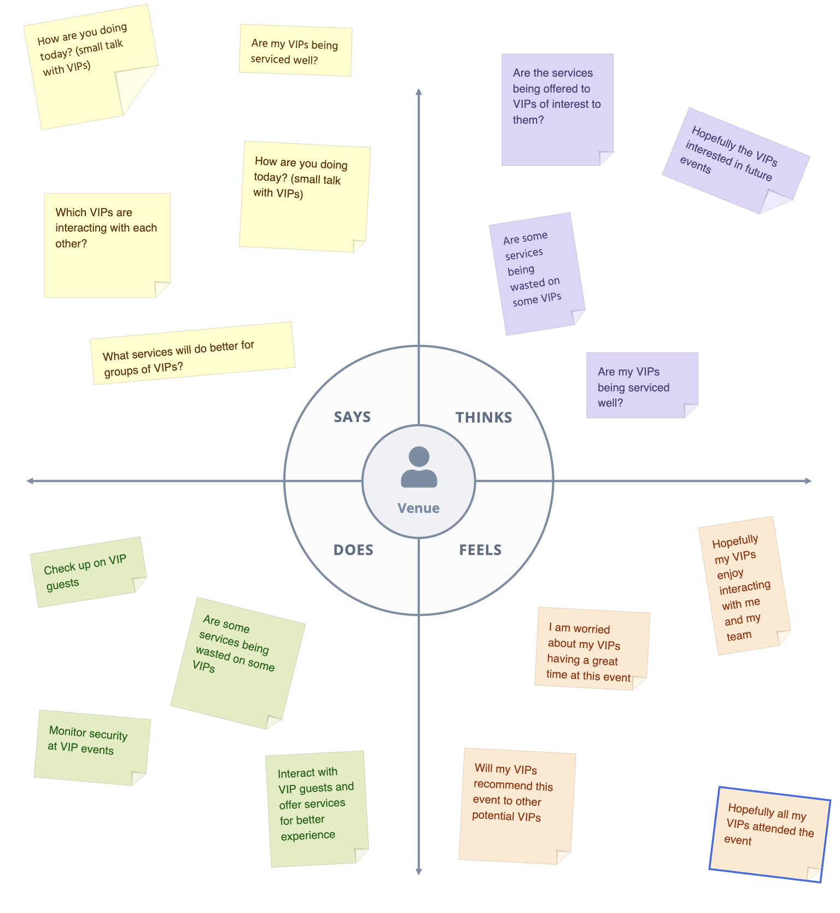
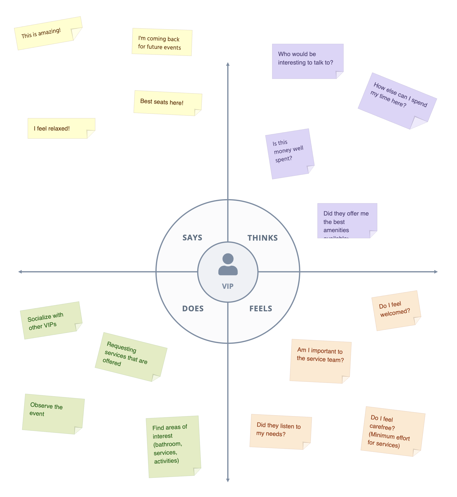

What is Banglet and what does it do?
Banglet is a bracelet that is used for quicker payment, clearance and identification procedure, in addition it can send its location via the use of RFID. The Venue managers can track the information on dashboard.
Who is Banglet for?
Banglet is mainly intended for event holders and it is used/worn by both VIP members during even
How does Banglet work?
On dashboard Banglet tracks the user information and handles the payment process it additionally can track each braclet. Each bracelet carries the information of a VIP user and process the communication with the nodes/server with the use of RFID.
Key Benefits of Banglet?
The main benefit is effecient process of identification and transaction process between VIPs and the vendor, additionally it can be used for tracking each bracelet. Vendors can use dashboard to view and filter VIP information as they see fit.
 